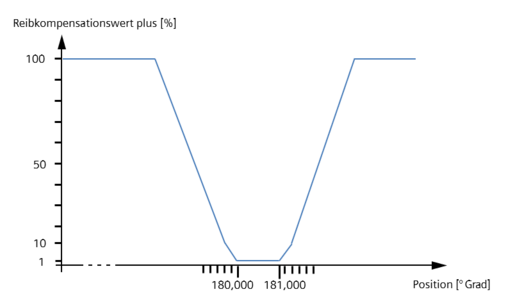
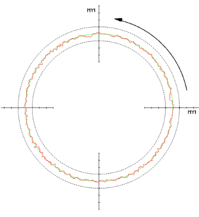
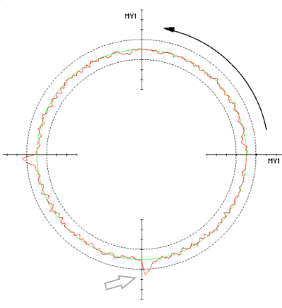

Einleitung
Das Beispiel zeigt, wie die Reibkompensation einer Linearachse in Abhängigkeit von der Position und der Drehrichtung einer Rundachse reduziert wird.
Voraussetzung
Um bei einer Achse den Reibkompensationwert zu adaptieren, stellen Sie folgende Achs-Maschinendaten ein:
MD32490 $MA_FRICT_COMP_MODE = 3 oder 4
MD32500 $MA_FRICT_COMP_ENABLE = 1
Beispiel
Vorgehensweise:
-
Wählen Sie im Dialog "Adaptionen" Softkey "Neu >", um eine neue Adaption einzugeben.
-
Wählen Sie einen Modus aus, zum Beispiel 1 für "Permanent" wirksam.
-
Wählen Sie als Eingangsachse eine Rundachse und als Ausgangsachse eine Linearachse.
-
Wählen Sie für die Eingangsachse als Eingangsgröße "Position" und für die Ausgangsachse als Ausgangsgröße "Reibkompensationswert plus".
-
Geben Sie die Werte gemäß folgender Kennlinie ein:

| | Eingangswert [°] | Ausgangswert [%] |
|---|
1 | 179.980 | 100.0 | 2 | 179.990 | 10.0 | 3 | 180.000 | 1.0 | 4 | 181.000 | 1.0 | 5 | 181.010 | 10.0 | 6 | 181.020 | 100.0 |
-
Schließen Sie die Eingaben mit Softkey "Übernehmen" ab.
|
Kreisformtest
Ohne Adaption wirkt die Reibkompensation auf die Y-Achse: | |
|  | |
Die Absenkung der Amplitude der Reibkompensation auf 1% wirkt richtungsabhängig bei der Position von 180 Grad: | |
|  | |